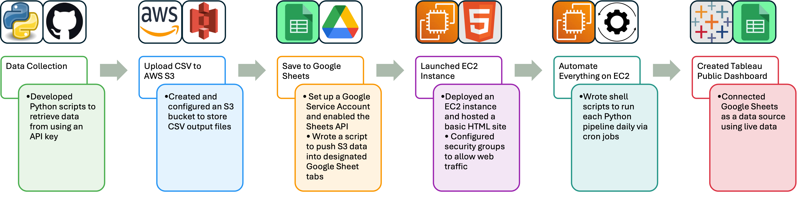

Welcome to the Odds Maker Dashboard
This dashboard helps everyday sports fans and bettors stay up to date with betting odds for international soccer competitions. Simply select a tournament from the left-hand menu to view odds from major sportsbooks for upcoming and past matches. Use this tool to compare values across platforms and make informed betting or viewing decisions.
- ⚽ Access odds for top tournaments like the World Cup, Club World Cup, and Gold Cup.
- 📊 See live odds from multiple major sportsbooks, refreshed daily.
- 📈 Use this dashboard to find the best odds across platforms and identify market value.
- 💬 Have thoughts or feedback? Click the "Feedback" button in the top-right corner to let me know!
Website Build Process
This section documents all the steps taken to build this dashboard.
This entire pipeline was designed with cost-efficiency in mind, using only free-tier tools across AWS, Google, and Tableau.
I started by developing Python scripts that use the-odds-api.com to pull real-time soccer odds. The API covers many global competitions and provides generous free-tier access. To manage and version my scripts, I uploaded them to a GitHub repository, ensuring accessibility and ease of updates.
After fetching the data, the script saves the results as CSV files and uploads them to an AWS S3 bucket. I chose S3 because it's free for small-scale use. Integration with Python via boto3 made it easy to automate the storage process.
Since Tableau Public doesn't connect directly to S3, I used the Google Sheets API to act as a middleman. Each CSV is uploaded to a designated tab within a single Sheet, allowing Tableau to reference updated live data.
I spun up a t2.micro EC2 instance on AWS using the free tier to host my HTML website. I configured the security groups to allow HTTP/HTTPS traffic and uploaded the site via SFTP. The website is built with lightweight HTML, CSS, and JavaScript.
To eliminate manual updates, I set up cron jobs on my EC2 instance. These jobs run the Python scripts once daily, ensuring the data is always fresh. This makes the system self-sustaining with no daily intervention needed.
Finally, I used Tableau Public to create dashboards that pull data directly from the Google Sheet. Using Tableau's embed options, I published each dashboard and integrated it into the site using their JavaScript embed code. This keeps the visualizations synced with the latest data and provides users with an interactive experience right from the browser.
World Cup Winners
This dashboard displays outright winner odds for the FIFA World Cup. You can compare which countries are favored to win the tournament, with odds pulled from multiple betting platforms. Use it to track line movement and identify longshot opportunities.

Concacaf Gold Cup
This dashboard shows match-by-match betting odds for the Concacaf Gold Cup. Each matchup includes odds from multiple sportsbooks, enabling you to find the best line for moneyline bets across North American teams.

Club World Cup
This dashboard provides odds for the FIFA Club World Cup matches, showing bookmaker spreads and predictions for games between top clubs from each continent. Useful for comparing teams that don't typically meet in domestic leagues.